一、LogAnalyzer介绍 本案例规划图： 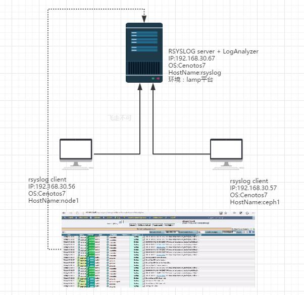 二、在rsyslog服务器上部署 LAMP环境。 1.安装httpd [root@rsyslog ~]# yum install httpd -y [root@rsyslog ~]# systemctl start httpd [root@rsyslog ~]# systemctl enable httpd 2.安装mysql [root@rsyslog ~]# yum install mysql mysql-server -y [root@rsyslog ~]# systemctl start mariadb [root@rsyslog ~]# systemctl enable mariadb Created symlink from /etc/systemd/system/multi-user.target.wants/mariadb.service to /usr/lib/systemd/system/mariadb.service. [root@rsyslog ~]# mysqladmin -u root password 'rsyslog.ppp' 测试下登陆，无问题后，安装php 3.安装php [root@rsyslog ~]# yum install php php-mysql php-gd -y [root@rsyslog ~]# cat /var/www/html/test.php <?php phpinfo(); ?> 打开客户端浏览器，进行访问测试http://192.168.30.67/test.php 4.安装rsyslog,并加入开机启动 [root@rsyslog ~]# wget -O /etc/yum.repos.d/rsyslog.repo http://rpms.adiscon.com/v8-stable/rsyslog.repoc [root@rsyslog ~]# yum install rsyslog-* --skip-broken -y [root@rsyslog ~]# systemctl enable rsyslog 5.rsyslog建库脚本，路径在/usr/share/doc/rsyslog-mysql-8.18.0/createDB.sql，现在我们登陆数据库创建个rsyslogdb库，并导入建库脚本 [root@rsyslog ~]# more /usr/share/doc/rsyslog-mysql-8.18.0/createDB.sql CREATE DATABASE rsyslogdb; USE rsyslogdb; [root@rsyslog ~]# mysql -uroot -p < /usr/share/doc/rsyslog-mysql-8.18.0/createDB.sql Enter password: 登陆测试一下库建好了没 [root@rsyslog ~]# mysql -uroot -p rsyslogdb Enter password: .... MariaDB [rsyslogdb]> show databases; +--------------------+ | Database | +--------------------+ | information_schema | | mysql | | performance_schema | | rsyslogdb | +--------------------+ 4 rows in set (0.00 sec) 创建用户并授权 MariaDB [rsyslogdb]> GRANT ALL ON rsyslogdb.* TO rsyslogdbadmin@localhost IDENTIFIED BY 'rsyslog.ppp'; Query OK, 0 rows affected (0.00 sec) MariaDB [rsyslogdb]> flush privileges; Query OK, 0 rows affected (0.00 sec) MariaDB [rsyslogdb]> exit 最后测试下该用户的登陆 [root@rsyslog ~]# mysql -ursyslogdbadmin -p rsyslogdb 6.修改rsyslog.conf文件，修改后如下： 重启rsyslog 服务，现在登陆mysql 进行验证。 MariaDB [rsyslogdb]> use rsyslogdb
Database changed
MariaDB [rsyslogdb]> select count(*) from SystemEvents;
+----------+
| count(*) |
+----------+
| 44 |
+----------+
1 row in set (0.00 sec)
MariaDB [rsyslogdb]> select * from SystemEvents where ID=1\G;
*************************** 1. row ***************************
ID: 1
CustomerID: NULL
ReceivedAt: 2016-05-10 15:11:19
DeviceReportedTime: 2016-05-10 15:11:19
Facility: 5
Priority: 6
FromHost: rsyslog
Message: [origin software="rsyslogd" swVersion="8.18.0" x-pid="3902" x-info="http://www.rsyslog.com"] start
NTSeverity: NULL
Importance: NULL
EventSource: NULL
EventUser: NULL
EventCategory: NULL
EventID: NULL
EventBinaryData: NULL
MaxAvailable: NULL
CurrUsage: NULL
MinUsage: NULL
MaxUsage: NULL
InfoUnitID: 1
SysLogTag: rsyslogd:
EventLogType: NULL
GenericFileName: NULL
SystemID: NULL
1 row in set (0.00 sec)
ERROR: No query specified
三、部署LogAnalyzer 1.下载 [root@rsyslog ~]# wget -c http://download.adiscon.com/loganalyzer/loganalyzer-3.6.6.tar.gz 解压 [root@rsyslog ~]# tar zxvf loganalyzer-3.6.6.tar.gz 复制文件到 [root@rsyslog ~]# cp -r loganalyzer-3.6.6/src/ /var/www/html/loganalyzer [root@rsyslog ~]# cp -r loganalyzer-3.6.6/contrib/* /var/www/html/loganalyzer/ 进入到loganalyzer 程序中，将以下脚本赋予执行权限 [root@rsyslog ~]# cd /var/www/html/loganalyzer/ [root@rsyslog loganalyzer]# chmod +x configure.sh secure.sh 运行configure.sh，将创建一个空白的config.php配置文件 [root@rsyslog loganalyzer]# ./configure.sh 2.打开浏览器访问 http://192.168.30.67/loganalyzer 安装界面，如下，会有一个error，选择here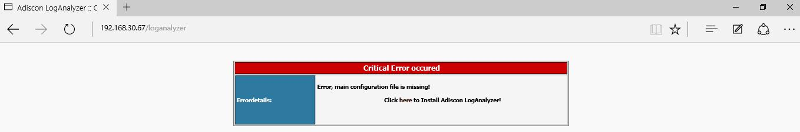 选择here进行安装 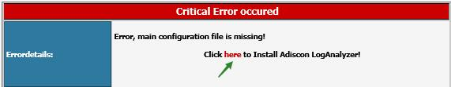 选择next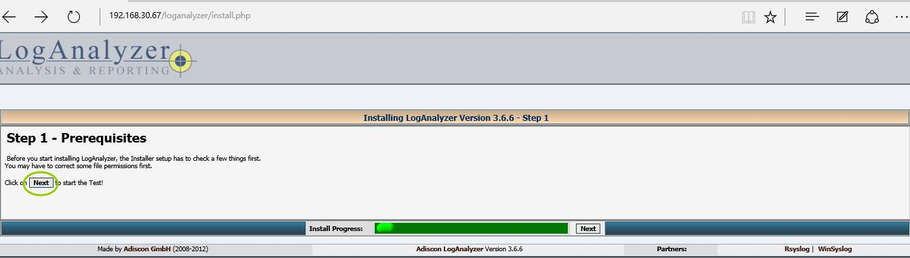 验证config文件，就是我们上一不运行configure.sh 生成的文件 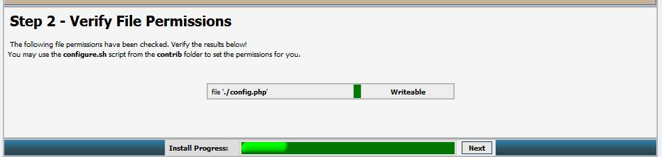 基本配置里，填写数据库连接信息 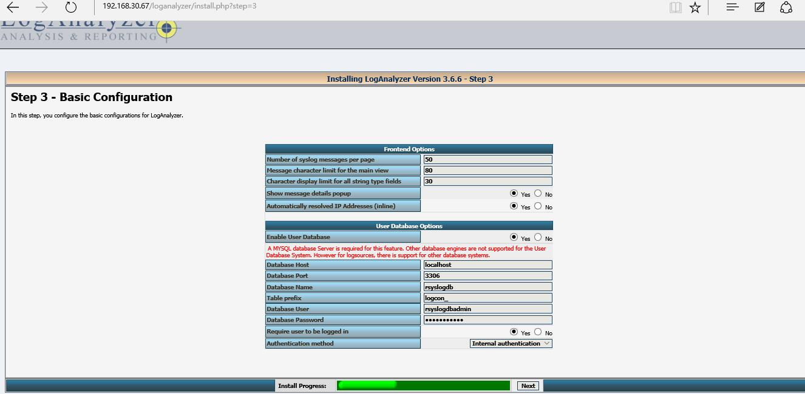 创建表，直接选择next 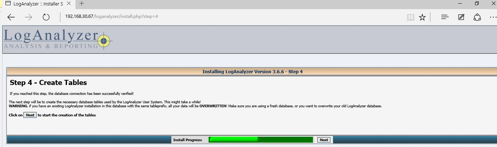 检查没有失败的状态。继续下一步 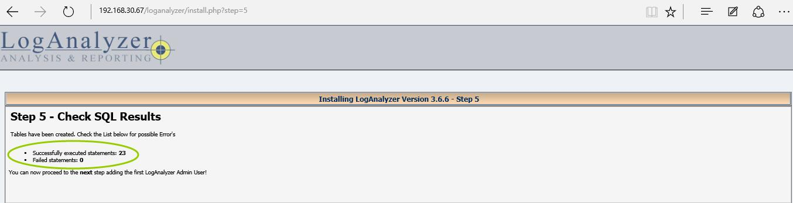 创建一个rsyslog的web管理用户，名字叫rsyslog 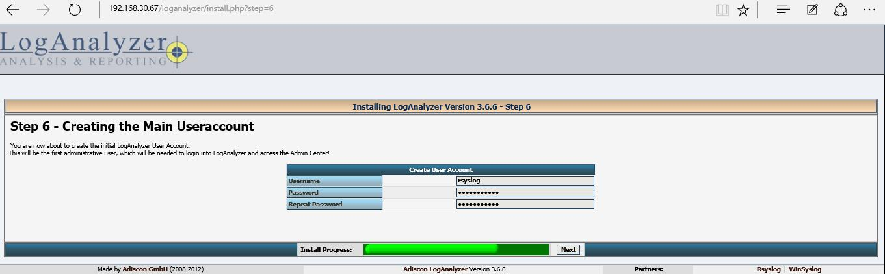 检查详细信息 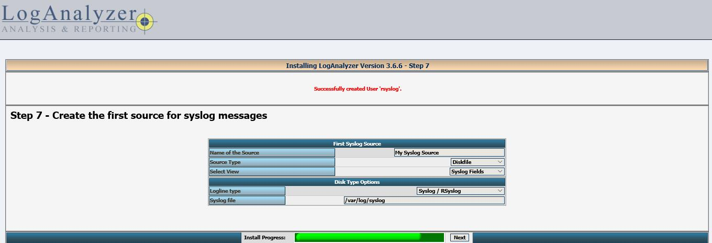 此处，source type 需要修改成mysql native 源，随后填写mysql相关信息，注意（Database Tablename 处我写填写错误，正确应该是SystemEvents） 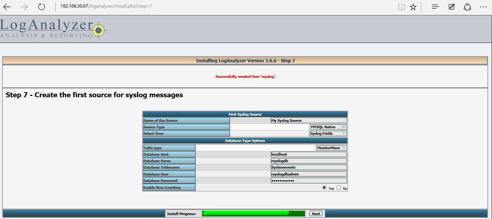 完成后，下一步就是登陆loganalyzer了。 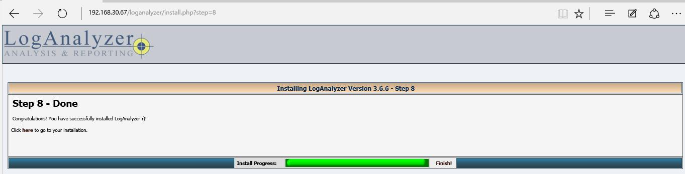 输入rsyslog，及设定的密码。 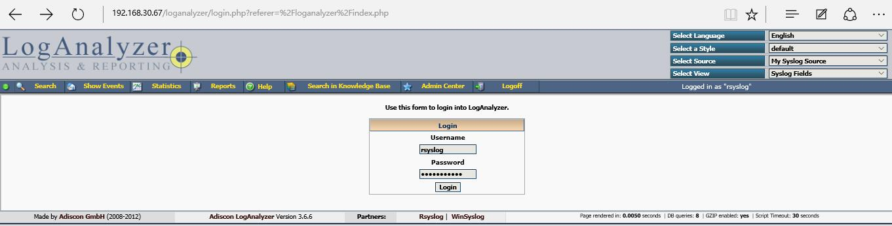 在这里，可以看到最后rsyslog server 收集到的日志，已经展示在首页了。 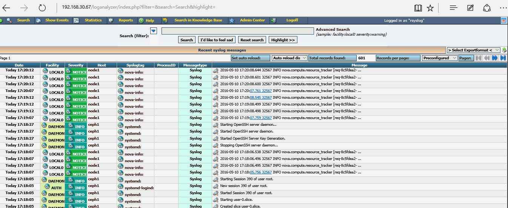
|